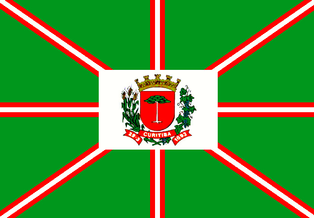

Motivos para visitar Curitiba
| Turismo |
Cultura |
Comidas |
| Jardim botanico |
Multicultural |
Diversificada |
| Museu do Olho |
Acolhe a todos |
Tipicas do sul |
| Bosque Europeu |
Chega a todos |
Especiarias regionais |
Curitiba está entre as cidades mais felizes do Brasil
O levantamento das 26 Cidades mais felizes do Brasil em 2020 foi feito pela revista Bula e reuniu dados sobre educação, saúde, emprego, saneamento básico, renda, longevidade e segurança pública.
Sobre viver em Curitiba
É uma das maiores cidades da próspera região sul e sua população é em grande parte proveniente de imigrantes alemães, ucranianos, russos, italianos e poloneses. A cidade é conhecida pelos planejadores urbanos em todo o mundo por seu inovador sistema de transporte público.
Bandeira de Curitiba
A Bandeira de Curitiba é um dos símbolos oficiais do município, ao lado do brasão e do hino. Foi oficializada por força da lei ordinária municipal nº 2.993, de 11 de maio de 1967.
